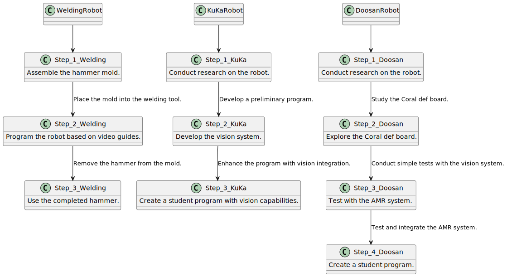

Introduction

Collaborative robots, or cobots, are revolutionizing industrial automation by enabling humans and machines to work side by side. Many companies are eager to join the cobot revolution, investing in these advanced systems to enhance productivity and flexibility. However, a lack of skills and available time often leaves these cobots underutilized, gathering dust instead of delivering value.
This project aims to address that gap by providing students of SMEOT with a practical, hands-on experience in working with cobots. Through this initiative, students will gain the essential knowledge and skills to program and operate cobots effectively, preparing them to bridge the expertise gap in the workforce.
Working with cobots, however, requires a strong focus on safety. Without proper training and precautions, these machines can pose risks to operators. The Roboost Project Group is committed to demonstrating how cobots can be implemented safely and effectively. This document outlines our workflow, detailing the steps taken to design a functional and safe cobot program, from analysis and design to implementation and evaluation.
By sharing this process, we aim to provide future SMEOT students and industry professionals with a robust foundation for working confidently and safely with cobots in diverse industrial settings.
Gijs Arkink (506101@student.saxion.nl);
Bram Geerdink (519294@student.saxion.nl);
Dylan Meijerink (520517@student.saxion.nl);
Hailing Xin (521493@student.saxion.nl);
Task overview
This overview illustrates the structure of a collaborative project involving multiple robotic systems. Each robot is assigned to a student who is responsible for developing a guiding for rest of the group and the students. The project focuses on four robots: the WeldingRobot, KuKaRobot, DoosanRobot, and AMR. For each robot, the responsable student leads development and explains the robot's functioning, while their project group provides assistance and learns from the progress made.

Detailed Workflow for Doosan Cobot
In this chapter we want to highlight a specific sequence within the project. Sinse the projet is split into multiple parts that work together, this chapter would Get way to big if all sequences are highlited. For that reason, we have pickt one sequence we want to highlight.
Doosan pick & place
The Doosan Cobot task is to recognize parts of a hammer (square or rectangular) using a vision system and accurately place them on a tool plate on the Omron AMR.
2. Process Workflow
2.1 Part Recognition
- The Doosan Cobot A uses a Coral Dev Board vision system to analyze incoming hammer parts.
- It identifies whether the part is square or rectangular based on predefined parameters (size, shape, edges).
- The recognition result is used to determine the proper placement orientation.
2.2 Picking
- The cobot moves to the pickup location, guided by the recognition system.
- Using its gripper, it carefully picks the identified part.
2.3 Placement
- The cobot moves to the tool plate on the Omron AMR.
- Depending on the part type (square or rectangular), it places the part in the designated position.
- Ensures parts are aligned correctly to avoid interference during transport.
2.4 Communication with AMR
- The cobot sends a signal (via I/O or Ethernet/IP) to the AMR to indicate that the placement task is complete.
- Awaits confirmation from the AMR before starting the next cycle.
3. Components Involved
| Components | Function |
|---|---|
| Doosan Cobot A | Equipped with a multi-functional gripper and precise motion control. |
| Coral Dev Board | Provides image processing capabilities for part recognition. |
| Tool Plate on AMR | Customized for securely holding square and rectangular parts. |
| I/O Module or Protocol | Facilitates signalling between the cobot and the AMR. |
4. Inputs and Outputs
| Inputs | Outputs |
|---|---|
| *Input 1: Vision system data | *Output 1: Placement position and orientation for the gripper. |
| *Input 2: Signal from AMR | *Output 2: Signal to AMR (placement task completed). |
5. Key Functional Requirements
- The vision system must achieve a recognition accuracy of at least 95% for part identification.
- The cobot's placement tolerance must be within ±1 mm to ensure stability during AMR transport.
- The process cycle time (recognition, pick, and place) should not exceed 15 seconds per part.
6. Safety Measures
- Equipped with collision detection to ensure safe operation near humans and other equipment.
- Gripper equipped with a soft-touch mechanism to avoid damaging parts.
- Emergency stop button accessible for manual override.
7. Risks and Mitigation
Risk 1: Misidentification of parts due to poor lighting or image quality
- Mitigation: Calibrate the vision system and ensure consistent lighting conditions.
Risk 2: Improper placement on the tool plate, causing instability
- Mitigation: Program double-check alignment after placement.
In order to make it more visual, the following grapic is created:

Flowchart
This flowchart outlines the development and implementation process for four distinct robots: the WeldingRobot, KuKaRobot, DoosanRobot, and AMR. Each robot's workflow is broken into clearly defined steps to facilitate task execution and progression.
- WeldingRobot: This robot's process involves assembling a hammer mold, programming the robot based on video guides, and ultimately using the hammer produced.
- KuKaRobot: The workflow includes conducting research on the robot and its vision system, followed by the creation of a student program incorporating vision capabilities.
- DoosanRobot: The process involves researching the robot and Coral def board, implementing the AMR system, and developing a student program. Each step builds on the previous to integrate functionality.
The steps for each robot are interconnected to guide the development process seamlessly.

Evaluation
Group evaluation about the work
Throughout the Roboost project, our team encountered several shifts in tasks and priorities as we adapted to evolving needs and constraints. Initially, the plan was to work with four individual cobots, but we later streamlined this to three, eliminating the Kuka robot since this was a stand-alone project. This adjustment allowed us to focus on delivering higher-quality outcomes with better resource allocation and collaboration. Similarly, our original plan targeted MBO 3 students as the primary audience. However, we expanded this scope to include all studies, ensuring the material's relevance and accessibility to a broader range of learners. This is due the fact that for the material a lot of Python scripts were written. For the lower levels the scirpts will be provided, for the higher educations these scripts can be written by themsels
Future improvements for your 2nd quartile
Looking ahead to the next quartile, some areas the can be improved are:
- Enhanced Planning and Flexibility: While we adapted well, more thorough initial planning and contingency strategies could help reduce the need for significant mid-project adjustments.
- Clearer Communication: Some shifts in priorities created temporary confusion. Establishing more frequent check-ins and a central system for updates can keep everyone on the same page.
- Feedback Integration: While we expanded our target audience, gathering feedback from students earlier could have helped tailor the content more effectively.
By building on these insights, we aim to refine our processes, improve our collaboration, and deliver an even stronger outcome in the next quartile.